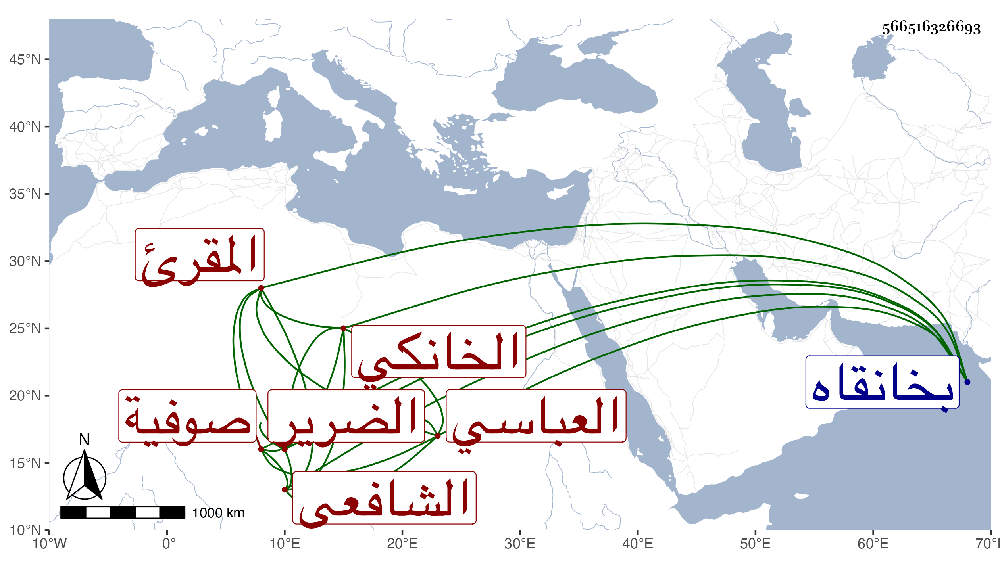

0902Sakhawi.DawLamic.ITO20230111-ara1.EIS1600.566516326693
Biography ID: 566516326693
754
محمد بن محمد بن محمد بن محمد بن محمد خير الدين أبو الخير بن الجلال العباسي الخانكي الشافعي المقرئ أحد صوفية الخانقاه ورفيق قريش الضرير وصهره على عمته والآتي أبوه . ولد في سنة خمس وأربعين بخانقاه سرياقوس ونشأ بها فحفظ القرآن وأخذ في الفقه وغيره عن الونائي الخانكي وغيره ثم لازم عبد الحق السنباطي ويس وأخذ القراآت عن الزين جعفر السنهوري وتميز فيها مع إلمام بفروع العبادات ونحوها ولازمني في أشياء دراية ورواية ومما سمعه مني في يوم عيد الفطر سنة خمس وتسعين مسلسل العيد ، وفهم مع خير وتقلل ورغبة في خدمة الصالحين وخطب بالمدرسة الجزمانية وغيرها .
